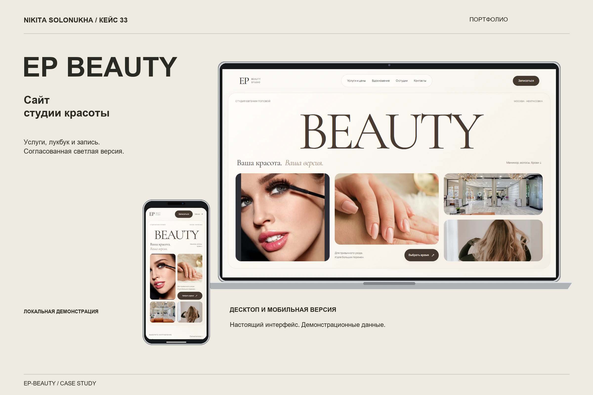
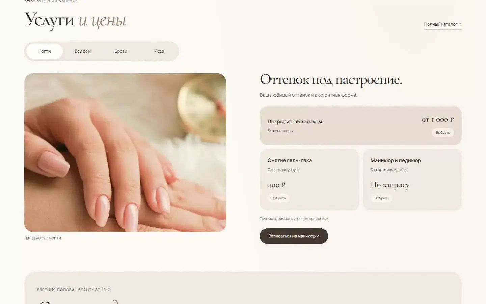
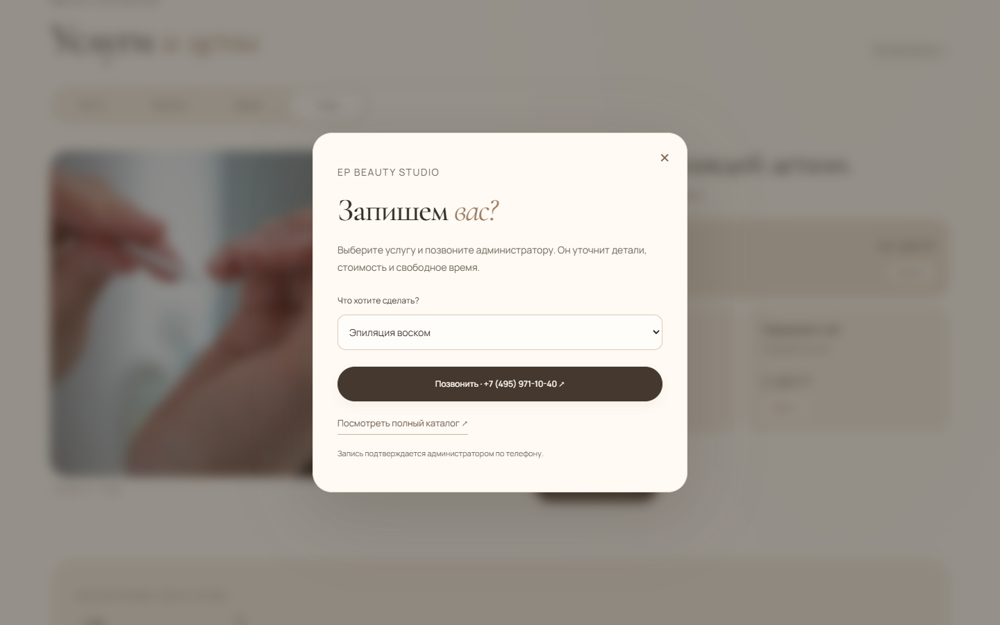
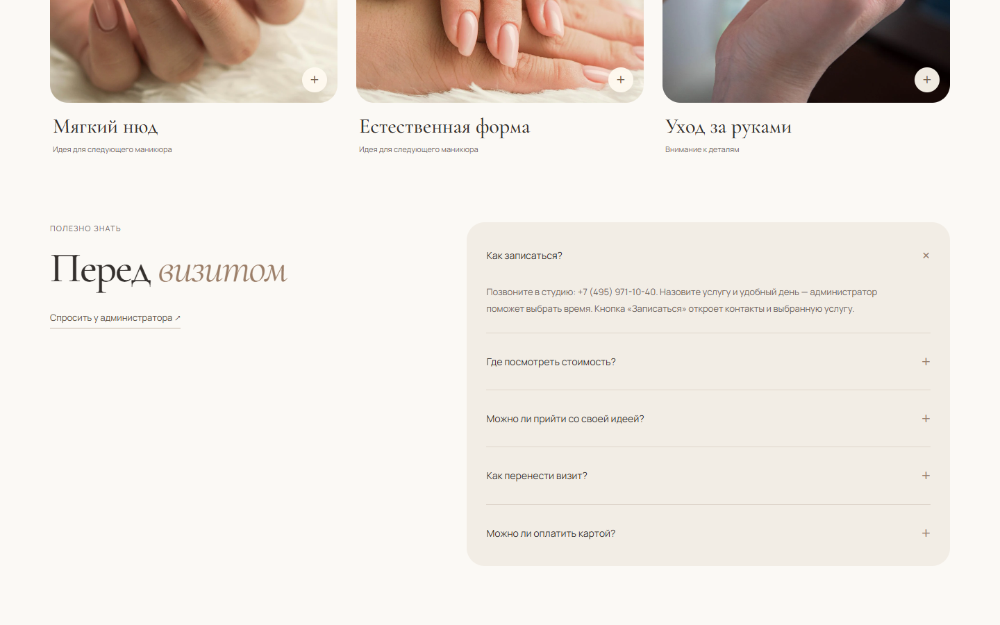

BEAUTY

BEAUTY STUDIO · IVORY EDITION
Ваша красота.
Ваша версия.
Светлая журнальная версия сайта с реальными услугами, ценами и входом в запись.
Не витрина одинаковых карточек, а журнал о деталях: ногти, волосы, брови, уход, пространство студии.
FULL WALKTHROUGH
От первого экрана
до контакта.
SERVICES / STATES
Услуга становится
выбором.


QUESTIONS / CONTACT
Спокойный путь
к администратору.

MOBILE MASTER
Журнал
помещается
в ладони.
EP Beauty соединяет атмосферу студии с конкретными услугами и понятным действием для записи.
Задача
Студии нужна ясная презентация процедур и атмосферы без перегруженного прайса.
Что я сделал
Собрал редакционный сайт с фотоматериалами, группами услуг, карточками процедур и записью.
Результат
Посетитель может изучить услуги и перейти к запросу на время.
Польза
Услуги, цены и атмосфера студии помогают выбрать процедуру и перейти к записи.